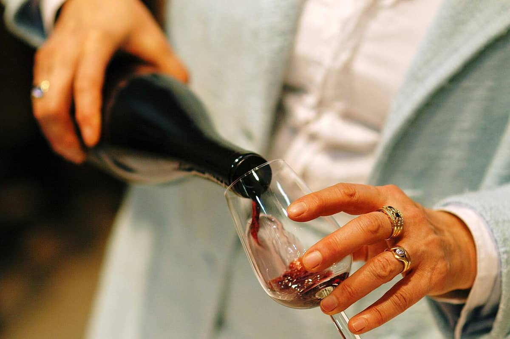

Strona główna › Degustacje
Degustacja wina w winnicy - jak się umówić?
Degustację umawiasz wcześniej - telefonicznie albo formularzem poniżej. Goście w opiniach radzą: na degustację warto umówić się z wyprzedzeniem.
Co jest na degustacji?
Próbujesz win z winnicy w Rzeczycy i rozmawiasz z gospodarzem o tym, jak rośnie winorośl na lubelskich wzgórzach. Program w próbce jest przykładowy - opiszemy Państwa degustację.
- Kilka win z własnej winnicy
- Spacer między rzędami winorośli
- Opowieść o uprawie i winobraniu
- Świeży miód do kupienia na miejscu
- Dla grup do 10 osób
- Wieczorem wino w altanie

Ile kosztuje degustacja i jak długo trwa?
Przykładowo 45 zł za osobę, ok. 1,5 godziny. Gościom noclegu doliczamy degustację do rezerwacji - wystarczy zaznaczyć ją w formularzu.
| Cena | przykładowo 45 zł za osobę |
|---|---|
| Czas | przykładowo ok. 1,5 godziny |
| Grupa | od 2 do 10 osób - większe grupy po rozmowie |
| Rezerwacja | wcześniej, telefonicznie albo przez formularz |
| Wiek | wino tylko dla osób pełnoletnich |
Ceny i czas przykładowe - wpiszemy Państwa zasady.